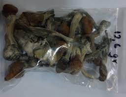

mushrooms
Υπάρχουν περίπου 25 είδη μανιταριών που περιέχουν παραισθησιογόνες ουσίες ή ψυχοδραστικά συστατικά, που είναι γνωστά ως ψιλοκίνη και ψιλοκυβίνη. Τα πιο κοινά είναι τα Strophanti (psilocybe) cubensis, Psilocybe semilanceata και Panaeolus subbalteatus. To Psilocybe cyanescens είναι το πιο δραστικό απ’ όλα.
ιστορια
Είναι γνωστό ότι ένα εκπληκτικό σύνολο παραισθησιογόνων φυτών χρησιμοποιούνταν από αρχαίες φυλές και πολιτισμούς για διάφορους λόγους -και πολλά χρησιμοποιούνται από τους απογόνους τους μέχρι σήμερα. Γενικά, τα φυτά αυτά λειτουργούσαν ως μέσο ενορατικής μαντείας και για να αποκτήσει ο χρήστης πρόσβαση στον κόσμο των «πνευμάτων».
Πώς καταναλώνεται;
Τα μανιτάρια ψιλοκυβίνης μπορούν να φαγωθούν φρέσκα ή να μαγειρευτούν ή να βράσουν μαζί με τσάι. Μπορούν επίσης να αποξηρανθούν.